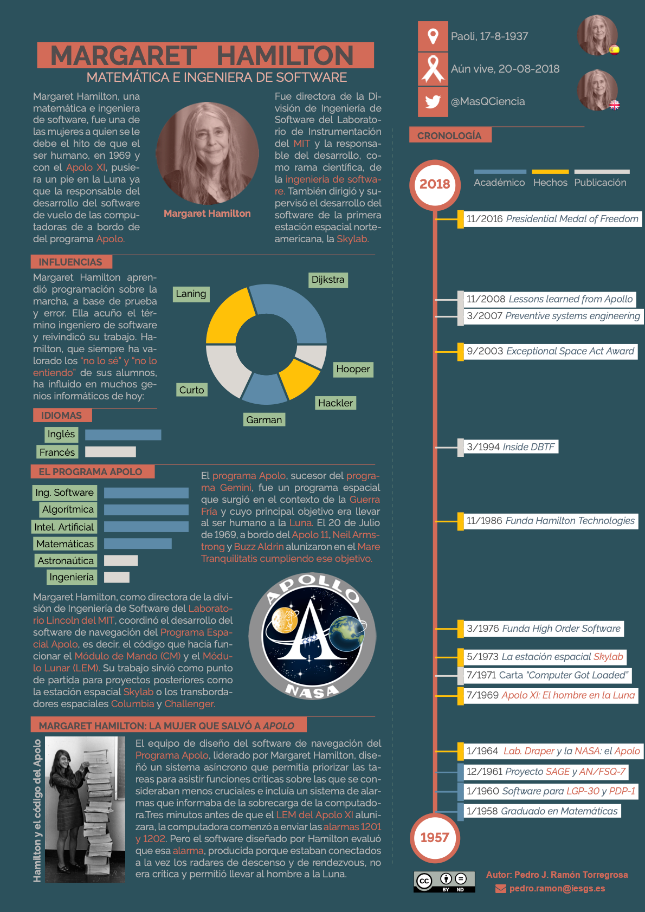
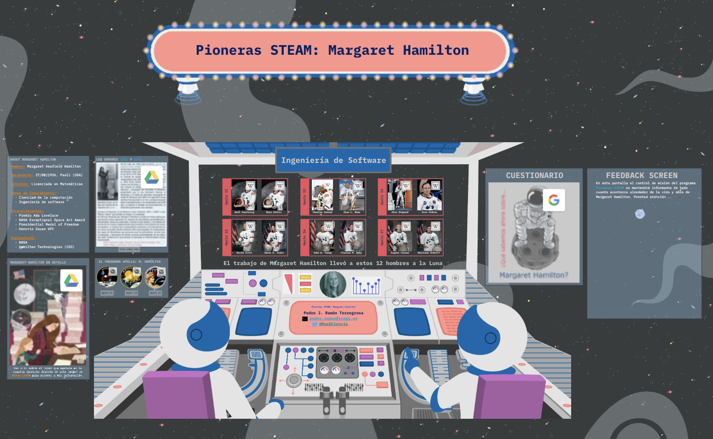

Infografía y material interactivo

Si haces clic sobre esta infografía podrás acceder a una versión en pdf con la que seguir aprendiendo, a través de los enlaces incrustados en ella (en las palabras de color, los epígrafes, la línea temporal,...). Te invito a descubrir cómo Margaret Hamilton logró que el módulo lunar Eagle de la misión Apolo XI de la NASA se posara sobre la superficie lunar. Neil Armstrong le debe "todos sus pasos" a esta mujer.
Gamificación e investigación interactiva
Para profundizar en todo lo relacionado con el programa espacial norteamericano, la vida de los astronautas y de todos cuantos hicieron posible el programa Apolo y la llegada del hombre a la Luna, prestando especial atención a la figura de Margaret Hamilton y otras mujeres que, bien en el control de misión como enroladas en el programa Mercury, lograron el hito de que el ser humano pusiera un pie fuera de nuestro planeta Tierra.
Para ello os invito a enrolaros como parte de la tripulación de la nave Margaret Hamilton y a que descubramos un trozo historia que definió como es nuestro mundo hoy en día. Para ello solo tienes que hacer clic sobre este enlace o sobre la imagen que aparece bajo estas líneas.
¡¡Buen vuelo!!

Sigue la misión Apolo XI en tiempo real
A las 14:32, hora peninsular española, del 16 de julio de 1969* el Saturno V AS-506 despegaba del Complejo de lanzamiento 39A del Centro Espacial Kennedy en Cabo Cañaveral (Florida) para dar comienzo a la misión del Apolo 11. A bordo iban, Neil Armstrong, Buzz Aldrin y Michael Collins; tres hombres llamados a hacer historia. Su misión: convertirse en los primeros seres humanos en pisar la Luna.
En Apollo 11 Real–Time Mission Experience, una espectacular desarrollada por Ben Feist, se puede seguir en tiempo real –aunque puedes avanzar y retroceder a tu gusto– el desarrollo de la misión desde 20 horas, 46 minutos y 5 segundos antes del despegue, o lo que es lo mismo, desde las 17:45:56 del 15 de julio de 1969. Esta web incluye todo el material filmado en el control de la misión; todas las transmisiones de TV y películas grabadas a bordo del módulo de mando y servicio (CMS) Columbia y del módulo lunar Eagle (LEM); 2.000 fotografías; 11.000 horas de audio del control de la misión (sí, 11.000); 240 horas de audio transmitido desde el Apolo 11; todo el audio recogido por los grabadores de a bordo; comentarios posteriores a la misión, y datos de las muestras traídas de vuelta. También incluye transcripciones del audio y un buscador que funciona sobre ellas.
Pero si te animas a convertirte en astronauta quizás también te resulte interesante hojear todos los pasos a seguir necesarios para llegar a la Luna con el Apolo 11 echando un ojo al plan de vuelo (pdf) de la misión.
¿Te has quedado con ganas de aventura? Pues qué te parecería decir aquello de "Houston, tenemos un problema" como miembro de la tripulación del Apolo 13 o acompañar a Eugene Cerman y Harrison Schmitt en el último paseo sobre la superficie de la Luna y acompañarlos en el viaje de vuelta del Apolo 17.